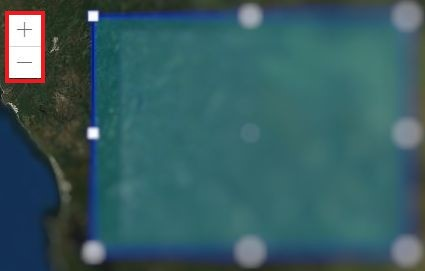
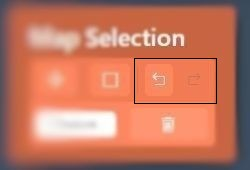
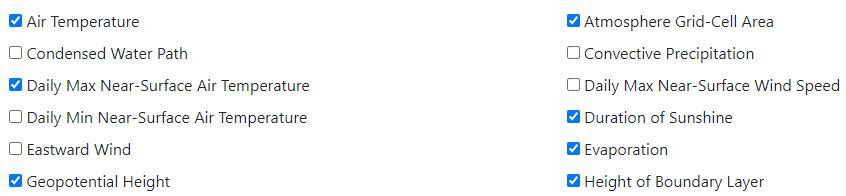
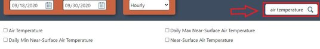

Here it is described the use of various functionalities that you will face while using this web application.
You can choose to draw your own area of extraction by drawing on the map API.

You can zoom in and out of the map by scrolling your mouse or hitting the plus/minus button.
You can Undo and Redo your action by hitting the left or right arrow button inside the Map selection box.
There are hundreds of the variables in the variable list, each variable presents a kind of climate data. You can click the cycle which following the variable name to select the variables for your data set.
The variable filter can quick filter the variables which you wanted. Entre the first few letters of the variable name in the filter text box, the variable list will show the variables which name match your typing in the filter box.
Select a specific time period for your data. For example, you can select 20/05/1999 for the start date and select 10/06/2000 in the end of date. The selection means the data includes variable information between 20th May 1999 to 10th June 2000. If you want to get just one day climate data, you can select the same day which you wanted for both start date and end date.

Time resolution is where the climate futures data is collected by real world stations, and they may record data every hour, every day, every month etc. It helps filter those data according to your needs. You can select any this of the option, but when you get the data it actually retrieves data of all time resolutions and sorts it in the pop up download box.

All selected parameters will be recorded and showed in this area, let you know what your selections are to help you understand what climate data will be provided. The function provides a chance to avoid human mistake before you download the data – commonly, the climate data is very large that means it will take you a lot of time. If you get the data which is not you wanted, the download time has been wasted.

Here all the downloadable files will be shown. Even if you select a specific time resolution (e.g. hourly) before procceding to download option you will still have access to other time resolution tabs but it will automatically select the tab (e.g. hourly) that you have chose before.